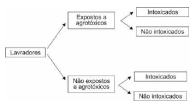
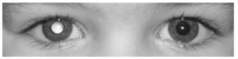
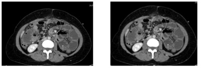
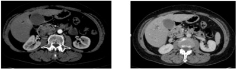
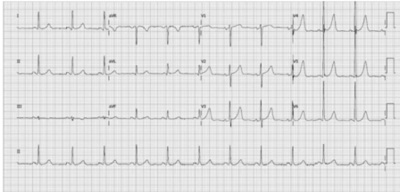
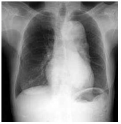

Questão 1 · Avaliação em Saúde · 4000164449Em uma avaliação de desempenho de um hospital foram avaliados: 1) número de horas inativas de um tomógrafo, 2) número de consultas por gestante, 3) indicadores de mortalidade e 4) proporção de altas em relação às consultas. Estes correspondem, respectivamente, aos atributos:
A 1: eficácia / 2: eficácia / 3: eficiência / 4: efetividade
B 1: eficiência / 2: eficácia / 3: efetividade / 4: efetividade
C 1: efetividade / 2: efetividade / 3: eficácia / 4: eficácia
D 1: eficácia / 2: efetividade / 3: eficiência / 4: eficiência
Questão 2 · Medicina Preventiva · Estudos de Coorte · 4000164444Considere a figura abaixo, referente a um estudo com lavradores de uma região agrícola e seu risco de desenvolver quadros de intoxicação ao longo do tempo. O tipo de estudo é

A observacional transversal.
B ecológico.
C coorte.
D caso-controle.
Questão 3 · Medicina Preventiva · 4000164441Uma pesquisa indicou que, em duas cidades, os números de cirurgias em pacientes com câncer de próstata eram distintos e a diferença não era justi cada pela incidência de doença. Uma investigação posterior descobriu considerável variação entre os clínicos quanto ao critério de encaminhamento para especialistas, bem como entre os especialistas em relação às suas práticas de avaliação, como procedimentos de busca e regras de decisão. Esta investigação é um exemplo de
A pesquisas inconclusivas.
B pesquisa sociológica.
C integração entre pesquisa quantitativa e qualitativa
D pesquisa não científica.
Questão 4 · Medicina Preventiva · História Natural da Doença Prevenção e Promoção de Saúde na APS · 4000164440Um programa de promoção da saúde, para prevenir e controlar doenças cardíacas, diabetes tipo 2 e câncer, bem como para reduzir os sintomas de depressão e ansiedade, será implantado e terá como base as estatísticas globais da Organização Mundial da Saúde sobre falta de atividade física. A população-alvo com maior porcentagem de inatividade é constituída por
A adolescentes.
B adultos.
C crianças.
D gestantes.
Questão 5 · Medicina Preventiva · 4000164438As diretrizes de atividade física da OMS recomendam que
A adultos devem realizar pelo menos 150 minutos de atividade aeróbica moderada a vigorosa por semana.
B adolescentes devem realizar uma média de 50 minutos de atividade física por dia.
C adultos devem realizar uma média de 15 minutos de atividade aeróbica moderada a vigorosa por dia.
D adolescentes devem realizar pelo menos 130 minutos de atividade física por semana.
Questão 6 · Coadministração de vacinas · Calendário vacinal em adultos e idosos · 4000164437Um usuário idoso do Sistema Único de Saúde recebeu no mesmo dia, por opção pessoal e di culdade de locomoção até a Unidade Básica de Saúde (UBS), a vacina anual de vírus atenuado contra in uenza e a segunda dose da vacina AstraZeneca contra covid-19. Segundo a Organização Mundial da Saúde, essa coadministração é
A desaconselhável pelo risco de reduzir a formação de anticorpos contra os dois vírus.
B desaconselhável pela forte evidência de redução de eficácia de ambas as vacinas.
C aceitável, mas com forte evidência de aumento de eventos adversos.
D aceitável e sem forte evidência de gerar aumento de eventos adversos
Questão 7 · Rastreamento do câncer de mama · Câncer de mama · 4000164436Em mamogra a diagnóstica, mulher de 66 anos apresenta linfoadenopatia (LAP) regional unilateral. A paciente relata aplicação de vacina Pfizer-BioNTech contra Covid-19 na semana anterior. Neste caso,
A não há estudos mostrando correlação entre vacinação contra Covid-19 e aparecimento de LAP.
B a LAP tem pouco valor diagnóstico no câncer de mama e, portanto, está associada à vacinação contra Covid-19.
C a LAP pode ser relacionada à vacina, se for ipsilateral à aplicação, mas deve-se seguir investigação de caso suspeito de câncer de mama.
D a LAP está, frequentemente associada sempre ao câncer de mama e é necessário realizar biópsia para esclarecimento diagnóstico.
Questão 8 · Diagnóstico · Transplantados de medula óssea · 4000164435Paciente de 55 anos, masculino, pro ssional de informática, com antecedente de transplante de medula óssea e com terapia imunossupressora, apresenta febre, tosse, dor pleurítica e hemoptise. Para continuar a investigação clínica deste paciente, além da tomogra a de tórax, o exame que deve ser indicado entre os abaixo é
A broncoscopia com pesquisa para antígeno galactomanana.
B broncoscopia com cultura para fungo do levedo broncoalveolar.
C exame micológico direto de escarro.
D biópsia pulmonar.
Questão 9 · Aspergilose · Transplantados de medula óssea · 4000164434Paciente de 55 anos, masculino, pro ssional de informática, com antecedente de transplante de medula óssea e com terapia imunossupressora, apresenta febre, tosse, dor pleurítica e hemoptise. Entre as hipóteses diagnósticas abaixo, a mais provável para este caso é:
A aspergilose.
B histoplasmose.
C candidíase pulmonar.
D paracoccidiodomicose.
Questão 10 · Transtorno do Humor Bipolar THB · Diagnóstico da Depressão · Depressão · 4000164433Paciente de 65 anos, feminina, com apatia, sensação de tristeza e de fardo para a família, sentimento de culpa e baixa autoestima, relatou que perdeu capacidade de sentir prazer e alegria, além de queixar-se de câimbras nas pernas, problemas de memória e desesperança quanto ao futuro. Ao exame físico apresenta retardo motor. A paciente refere que apresenta essas queixas há, aproximadamente, três semanas. Entre as hipóteses diagnósticas abaixo, a mais provável é
A transtornos de personalidade.
B transtorno afetivo bipolar.
C transtorno depressivo recorrente.
D transtorno depressivo maior.
Questão 11 · Maus tratos à crianças e adolescentes · 4000164432Menina, 8 anos de idade, chora e tem di culdade ao caminhar. Ao exame físico apresenta hematomas nas nádegas e braços, além de joelho edemaciado e doloroso à palpação. A radiogra a mostra fratura na metá se femoral distal. A mãe informa que a criança, assim como seus três irmãos, apresenta histórico de boa saúde e não toma medicações, mas é muito desajeitada e vive caindo dentro de casa justi cando as lesões, nesta época de con namento devido à pandemia. A criança mora em casa com os irmãos, a mãe, a avó materna e o pai. Neste momento, dentre as opções abaixo, a melhor conduta é
A entrevista individual com a criança para confirmar a violência doméstica.
B notificar às autoridades competentes a hipótese de violência doméstica.
C tentar identificar o agressor, antes de notificar.
D entrevistar a mãe, pai e os irmãos, individualmente, para confirmar a violência doméstica.
Questão 12 · Reações adversas vacinais · 4000164431Paciente de 3 anos de idade apresenta abscesso quente no braço, 55 horas após receber dose de vacina adsorvida para difteria, tétano e pertússis (DTP). A recomendação, segundo Manual de Vigilância Epidemiológica de Eventos Adversos Pós-Vacinação do Ministério da Saúde, é completar o esquema vacinal com
A DTPa e fazer notificação.
B DTP e fazer notificação.
C DTPa e sem necessidade de notificação.
D DTP e sem necessidade de notificação.
Questão 13 · Tratamento da Hipertensão arterial · 4000164430Paciente em uso de hidroclorotiazida, olmesartana e levotiroxina sódica apresenta hiperglicemia, câimbras e insônia. Essas queixas provavelmente estão relacionadas, respectivamente, ao uso de:
A hidroclorotiazida, levotiroxina e olmesartana.
B hidroclorotiazida, hidroclorotiazida e levotiroxina.
C levotiroxina, olmesartana e levotiroxina.
D levotiroxina, hidroclorotiazida e olmesartana.
Questão 14 · Distúrbios hipertensivos na gestação DHEG · 4000164429Gestante de 32 anos, na 30ª semana de gestação, apresenta pressão arterial sistólica 156 mmHg e pressão arterial diastólica 102 mmHg. Dentre os seguintes tratamentos farmacológicos, o melhor é
A Atenolol.
B Enalapril.
C Losartana.
D Adalat.
Questão 15 · Estadiamento · 4000164428Paciente de 35 anos apresenta diagnóstico de câncer do colo do útero com estadiamento IB1 ( Gynecology and Obstetrics indicada para este caso é
A tomografia por emissão de pósitrons combinada com tomografia computadorizada.
B ressonância magnética nuclear da pelve.
C ultrassonografia transretal.
D tomografia computadorizada de abdômen e pelve.
Questão 16 · Inf ecção Urinária e Bacteriúria Assintomática na gestação ITU · Obstetrícia · 4000164427Primigesta, 14 semanas de gestação, assintomática, comparece à segunda consulta de pré-natal com os resultados dos exames solicitados. Todos estavam normais com exceção do exame de urina que mostrou aumento de leucócitos e hemácias, nitrito positivo e presença de 10^5 unidades formadoras de colônias de paciente, dentre as abaixo, é
A orientação quanto aos sintomas de infecção do trato urinário.
B antibioticoprofilaxia em dose diária com nitrofurantoína.
C antibioticoterapia em dose única com fosfomicina.
D aumento de ingesta hídrica e uso de anti-inflamatório por 3 dias.
Questão 17 · Planejamento f amiliar · 4000164426Primípara puérpera teve parto vaginal há 1 semana. Gostaria de fazer uso de método contraceptivo. Está em aleitamento materno. O método contraceptivo que deve ser prescrito para ela, dentre as opções abaixo, é
A DIU hormonal.
B implante subcutâneo.
C DIU de cobre.
D injetável mensal.
Questão 18 · Obstetrícia · Morte f etal Óbito f etal OF · 4000164425Primigesta, 39 anos, 36 semanas, foi para o laboratório realizar ultrassonogra a obstétrica, e constatou-se óbito fetal intrauterino compatível com 35 semanas, sem causa aparente. No momento nega queixas álgicas, perda de líquido ou sangramento vaginal. A conduta mais adequada, nesse momento, dentre as abaixo, é
A indução com misoprostol.
B cesárea segmentar-corporal.
C aguardar o trabalho de parto espontâneo.
D cesárea segmentar-transversa.
Questão 19 · Exames complementares · Nódulo mamário · 4000164424Mulher de 42 anos de idade refere nódulo de mama esquerda de 2 centímetros há 3 meses. Foi à UBS e o médico tentou fazer uma punção e não veio líquido. A conduta indicada a seguir, dentre as abaixo, é
A indicar mamotomia para retirada do nódulo.
B realizar ultrassonografia de mamas.
C realizar mamografia bilateral.
D indicar quadrantectomia e radioterapia.
Questão 20 · Tratamento das mulheres que desejam engravidar · 4000164423Mulher de 35 anos de idade tenta engravidar há 12 meses. O casal foi investigado e constatou-se infertilidade por anovulação crônica. Ela encontra-se com sobrepeso e tem diagnóstico de síndrome dos ovários policísticos. A conduta mais adequada, dentre as abaixo, é
A inseminação artificial.
B ooforoplastia em cunha.
C fertilização
D indução de ovulação com letrozol.
Questão 21 · Pólipo endometrial · 4000164422Mulher de 50 anos de idade, refere sangramento vaginal intermitente há 2 meses. A data da última menstruação foi há 2 anos. Nega terapia hormonal e comorbidades. Realizou ultrassonogra a endovaginal que mostrou imagem hiperecogênica de 7 mm com vascularização única e espessura endometrial de 3 mm. A conduta mais adequada, dentre as abaixo, é
A curetagem uterina para biópsia endometrial.
B histeroscopia cirúrgica para retirada de pólipo endometrial.
C histerectomia subtotal.
D histerectomia total abdominal e salpingooforectomia bilateral.
Questão 22 · Tratamento · Ginecologia · 4000164421Mulher de 78 anos de idade, hipertensa e diabética controlada com medicamentos, tercigesta com 3 partos normais, refere bola na vagina há 2 anos, que tem piorado progressivamente. Há 6 meses precisa introduzir a bola para conseguir urinar. Nega vida sexual, incontinência urinária e anal. Entre os tratamentos abaixo, o mais indicado é
A pessário vaginal.
B colocação de
C colpocleise sob anestesia local.
D colpossacrofixação abdominal sob anestesia geral.
Questão 23 · Def inição · Abortamento · Obstetrícia · 4000164420Paciente de 30 anos de idade submeteu-se a aspiração manual intrauterina por suspeita de abortamento retido. O material é enviado para exame anatomopatológico (AP) e cariótipo. Após 5 dias, recebe os seguintes laudos: presença de vilosidades coriônicas e tecido trofoblástico com áreas necróticas; cariótipo 47 XXY. A dosagem de BhCG após uma semana tem valor de 5 mU/mL. Neste caso, após análise dos exames, o diagnóstico final é
A mola hidatiforme parcial.
B mola hidatiforme completa.
C abortamento.
D neoplasia trofoblástica gestacional.
Questão 24 · Hemorragias pós parto HPP e rotura uterina · Obstetrícia · 4000164419Uma mulher de 34 anos de idade teve parto fórcipe por apresentação occípito-sacra, realizado com bloqueio de pudendo. O recém-nascido pesou 3.560 g e foi realizada episotomia mediolateral direita, sem intercorrências. Na enfermaria, após 1,5 hora do parto, começou a apresentar sangramento vaginal importante. Ao exame, encontra-se corada, com sinais vitais normais, abdome ácido, útero palpável 3 cm abaixo da cicatriz umbilical, contraído. Observa-se sangramento com coágulos em grande quantidade no absorvente. Entre as condutas abaixo, a melhor para este caso é
A massagem uterina e pesquisa de distúrbios de coagulação sanguínea.
B misoprostol por via vaginal.
C infusão rápida de ocitocina por via endovenosa.
D revisão imediata do canal de parto.
Questão 25 · Rotura uterina · 4000164418Parturiente de 38 semanas, secundigesta com 1 cesária anterior, apresenta 2 contrações em 10 minutos, colo medianizado, bolsa rota há 2 horas e 5 cm de dilatação há 1 hora. A equipe decide introduzir ocitocina endovenosa em dose baixa. Após uma hora, a paciente refere dor intensa, 5 contrações longas em 10 minutos, batimentos cardíacos fetais de 160 por minuto, dilatação de 7 cm e distensão da região segmentar do útero, que apresenta forma de ampulheta. Neste momento, está indicado interromper imediatamente a ocitocina
A e realizar cesária por rotura uterina instalada.
B pelo risco iminente de rotura uterina.
C e indicar analgesia de parto para corrigir a distocia funcional.
D e realizar cesária por desproporção cefalopélvica.
Questão 26 · Distúrbios hipertensivos na gestação DHEG · 4000164417Primigesta, 23 anos de idade, 36 semanas, vai em consulta de pré-natal de rotina sem nenhuma queixa. Ao aferir a pressão arterial (PA), observam-se níveis de 140 × 95 mmHg. A aferição é repetida após repouso em decúbito lateral esquerdo e mantém-se em 140 × 90 mmHg. Foram solicitados exames, que mostraram hemoglobina: 11,5 g/dL, plaquetas: 170 mil/mm³, e proteinúria: 400 mg em 24 horas. O feto encontra-se no percentil 50 de peso, com cardiotocogra a de padrão normal. Entre as seguintes propostas terapêuticas, a melhor é
A medir a PA semanalmente e instruir a paciente quando retornar.
B indicar cesária nesse momento.
C indicar indução de parto nesse momento.
D internação para controle pressórico e laboratorial e administração de corticoide.
Questão 27 · Ginecologia · Tratamento · 4000164416Uma mulher de 22 anos de idade procura atendimento ginecológico de rotina na UBS. Refere, que às vezes, apresenta sangramento após relação sexual. Não tem parceiro xo, é nuligesta e utiliza contraceptivo hormonal combinado. Tem ciclos menstruais regulares. No exame especular, observa-se secreção mucopurulenta no colo uterino, em pequena quantidade. A passagem da espátula no colo causa sangramento. Nesse caso, entre as seguintes opções terapêuticas, a mais indicada é
A penicilina benzatina 1.200.000 UI IM dose única.
B doxiciclina 500 mg VO dose única.
C ciprofloxacina 500 mg VO 1 vez por dia por 14 dias.
D ceftriaxona 500 mg IM dose única mais azitromicina 1 g VO dose única.
Questão 28 · Etiologia · Exames complementares · Classif icação FIGO · 4000164415Mulher de 47 anos de idade, hígida, procurou atendimento com queixa de aumento do volume menstrual há cerca de um ano. Refere usar cerca de 10 absorventes ao dia e, por vezes, ocorrem vazamentos. O intervalo menstrual é de 40 a 50 dias. Ao exame, encontra-se descorada ++/4+, normotensa, hidratada e afebril. O exame ginecológico mostra útero de tamanho e consistência normais, anexos palpáveis e normais. Sem sangramento no momento do exame. Exames subsidiários mostram hemoglobina de 9,8 g/dL, coagulograma normal, citologia cervicovaginal normal, ultrassonogra a pélvica normal. Esse quadro sugere sangramento uterino anormal de causa
A ovulatória.
B iatrogênica.
C não classificada.
D adenomiose.
Questão 29 · Fístulas genitourinárias · Ginecologia · 4000164414Mulher de 50 anos de idade foi submetida a histerectomia total abdominal por miomas e volume uterino de 800 cm³. No 1º dia de pós-operatório, refere perda de urina constante, apesar de urinar a cada 2 horas com uxo bom. Ao exame especular, observa-se urina coletada no interior da vagina, não sendo possível observar a presença de orifício stuloso. A equipe instala sonda vesical, por onde se introduzem 200 mL de solução siológica corada com azul de metileno e solicita- se que a paciente deambule por alguns minutos. Repete-se o exame especular e observa-se apenas urina amarela no canal vaginal. Entre as seguintes hipóteses diagnósticas, a mais provável é
A bexiga hiperativa por lesão vesical.
B fístula vésico-vaginal supratrigonal.
C fístula ureterovaginal.
D lesão iatrogênica de colo vesical.
Questão 30 · Torção anexial · Ginecologia · 4000164413Mulher de 32 anos de idade chega ao pronto-socorro com queixa intensa de dor pélvica há cerca de 3 horas. Refere que estava na academia quando sentiu dor aguda e intensa na pelve, causando náusea e sensação de desmaio. Faz uso irregular de pílula contraceptiva. Tomou medicação analgésica e colocou bolsa de água quente, sem melhora, decidindo ir ao PS. Ao exame encontra-se normotensa, corada e afebril. Abdome bastante doloroso com descompressão brusca presente em fossa ilíaca direita. O toque vaginal demonstrou dor intensa à mobilização do colo, impossibilitando exame adequado. Realizada ultrassonogra a pélvica, que mostrou imagem sólido-cística em região pélvica direita, medindo 8 cm. A equipe indicou cirurgia. Entre os seguintes achados cirúrgicos, o mais provável é
A abscesso tubo-ovariano.
B tumor ovariano com torção anexial.
C gravidez ectópica íntegra.
D apendicite aguda bloqueada.
Questão 31 · Of talmologia · Retinoblastoma · 4000164412Pais de pré-escolar, sexo feminino, 4 anos, em consulta de rotina com pediatra referem que as fotos de sua lha, quando tiradas com O exame ocular revelou: reflexo vermelho alterado no olho direito e normal no esquerdo. Fundo de olho normal à esquerda e à direita com múltiplas massas rosadas, vascularizadas, parcialmente calci cadas, preenchendo a cavidade vítrea. Entre as seguintes hipóteses diagnósticas, a mais provável para este caso é:

A retinoblastoma.
B catarata congênita.
C doença de Coats.
D descolamento de retina.
Questão 32 · Icterícia nenonatal e distúrbios hematológicos no RN · 4000164411Recém-nascido pré-termo tardio, com 36 semanas e 4 dias de idade gestacional, é levado ao pronto-socorro no quinto dia de vida com queixa de coloração amarelada em todo o corpo. A dosagem das bilirrubinas evidenciou: BT: 20 mg/dL e BI: 19,1 mg/dL. Peso de nascimento de 2.950 g e, na consulta, 2.620 g. A tipagem sanguínea da mãe e do RN é A Rh+. A mãe refere que a criança chora muito e não evacua desde a alta hospitalar no terceiro dia de vida. Entre as seguintes opções de fototerapia, a melhor conduta nesse caso é fototerapia
A padrão, com irradiância entre 8 e 10 μW/cm²/nm.
B de alta irradiância > 30 μW/cm²/nm, superior e inferior.
C padrão e suspensão do aleitamento.
D dupla, com irradiância entre 16 e 30 μW/cm²/nm.
Questão 33 · Toxoplasmose na gestação · Toxoplasmose congênita · 4000164410Recém-nascido, sexo masculino, nascido de parto vaginal a termo, apresentou Apgar 7 (1’) e 9 (5’), peso de 3.520 g e exame físico normal. Os dados no cartão de pré-natal evidenciam presença de anticorpos IgM e IgG com 80% de avidez contra o iniciais, a melhor para este recém-nascido é
A não realizar maiores investigações.
B realizar exames para o diagnóstico de toxoplasmose congênita.
C iniciar tratamento para toxoplasmose congênita.
D solicitar a avaliação do infectologista.
Questão 34 · Transmissão vertical do HIV · 4000164409Recém-nascido de parto vaginal, lho de mãe HIV positivo há 5 anos, apresenta peso ao nascer de 3.247 g, Apgar de 1’ e 5’: 7 e 9 respectivamente e Capurro: 39 semanas e 2/7. A mãe fez uso correto de terapia antirretroviral durante toda a gestação e tem carga viral indetectável do 3º trimestre. Entre os esquemas pro láticos seguintes, o mais adequado para esse recém-nascido, a ser prescrito preferencialmente até 4 horas de vida é:
A Zidovudina e Lamivudina por 28 dias.
B Zidovudina por 28 dias.
C Zidovudina por 28 dias e Nevirapina por 14 dias.
D Raltegravir por 28 dias.
Questão 35 · COVID 19 · Pediatria · 4000164408Paciente de 3 anos e 6 meses de idade, previamente hígido, veio ao pronto atendimento com história de febre há 4 dias de 38,4 °C, tosse leve, alguns episódios de vômito e dor abdominal. Ao exame ele se encontra em REG, descorado, hidratado, anictérico, afebril. Conjuntivite bilateral. Taquidispneico, com estertores grossos bilateralmente à ausculta pulmonar. Ritmo cardíaco em galope sem sopros. Fígado a 3 cm do RCD. Perfusão periférica normal. FC: 140 bpm, FR: 52 ipm, PA: 100 × 55 mmHg. Os exames iniciais mostram alteração do TP e TTPa, proteína C reativa e D-dímero elevados. A radiogra a de tórax evidenciou área cardíaca aumentada e in ltrado pulmonar bilateral com predomínio em bases bilateralmente. Entre os seguintes exames laboratoriais, o que confirma a hipótese diagnóstica mais provável para este caso é:
A aneurisma em coronária.
B ferritina acima de 500 ng/mL.
C sorologia para Covid-19 com IgG elevado.
D sorologia para Sarampo com IgM elevado.
Questão 36 · Escarlatina · 4000164407MP, sexo feminino, 7 anos de idade, com queixa de dor de garganta e febre de 38,9 °C há 3 dias, lesões na pele há 1 dia e dor abdominal difusa hoje. Nega tosse, coriza e alteração do hábito intestinal. Apresenta, ao exame físico, exantema cutâneo micropapular áspero generalizado, com palidez perioral e hiperemia em dobras cutâneas. Linfonodos palpáveis menores do que 1 cm em cadeia cervical e submandibulares bilateralmente. Orofaringe hiperemiada com petéquias em palato e descompressão brusca negativa. Entre as seguintes propostas terapêuticas, a mais adequada para este paciente é:
A Paracetamol, Ibuprofeno e Hidroxizine.
B Paracetamol e Ibuprofeno.
C Azitromicina, Hidroxizine e Dipirona.
D Dipirona e Amoxicilina.
Questão 37 · Emergências Pediátricas · Pediatria · 4000164406Paciente de 4 anos de idade previamente hígido estava internado com pneumonia bilateral na enfermaria. Evoluiu com insu ciência respiratória necessitando de intubação orotraqueal e ventilação mecânica sob sedação e analgesia contínua. Iniciado modo de ventilação com pressão controlada (PCV), com fração inspirada de oxigênio de 100%, pressão expiratória nal de 8 cmH₂O, pressão inspiratória nal de 20 cmH₂O, FR: 20 ipm e tempo inspiratório de 0,5 seg. A gasometria mostrou pH 7,38 com bicarbonato 24 mEq/L, pO₂: 74 mmHg e normocapnia. Neste momento, entre as condutas seguintes, a mais adequada para este caso é
A aumentar a pressão inspiratória final.
B diminuir pressão expiratória final.
C aumentar o tempo inspiratório.
D aumentar a frequência respiratória.
Questão 38 · Exantema Súbito · 4000164405Lactente de 8 meses, previamente hígido, apresenta história de febre diária de 38,5° a 39 °C há 5 dias e irritabilidade. Há um dia apresenta manchas rosadas em tronco que se espalharam para os membros. Não apresentou tosse, coriza ou diarreia. Está se alimentando normalmente e afebril desde ontem. Ao exame físico apresenta bom estado geral, otoscopia com leve hiperemia bilateral, orofaringe sem alteração e exantema maculopapular, não coalescente e sem descamação, localizado em tronco, raiz dos membros e discreto em face. Restante do exame físico sem alteração. Dentre os agentes etiológicos abaixo, o mais provável neste caso é:
A Parvovírus humano B19.
B Herpes vírus 6.
C Coxsackie vírus.
D Epstein-Barr vírus.
Questão 39 · Prevenção e manejo dos principais problemas relacionados à amamentação · Pediatria · 4000164404Criança de 2 meses e 10 dias de idade, internada por bronquiolite viral aguda, com possibilidade de realimentação após um breve período de suspensão alimentar. Vinha recebendo aleitamento materno exclusivo. A mãe, 19 anos de idade, há dois dias apresenta doença diarreica, sem muco ou sangue. Em relação ao aleitamento materno, dentre as recomendações seguintes, a melhor para este caso é:
A liberar o aleitamento materno, com os devidos cuidados higiênicos.
B contraindicar o aleitamento materno pelo período de duração da diarreia.
C introduzir fórmula láctea para complementar o aleitamento.
D liberar o aleitamento uma semana após o término da diarreia.
Questão 40 · Pediatria · Tratamento · 4000164403Lactente de 4 meses de vida é levado a UPA com história de obstrução nasal, coriza clara e tosse há 4 dias. Há 1 dia houve piora do quadro com tosse mais intensa, di culdade para respirar e respiração rápida. Nega febre, sonolência, gemência ou apneia. Mãe refere que a criança nasceu de termo, por cesariana, e nega doenças anteriores. Negou também sintomáticos respiratórios em casa. Ao exame, o lactente está em bom estado geral, acianótico, hidratado, ativo, FR: 66 ipm e discreta tiragem intercostal. SatO2: 95%. À ausculta pulmonar, apresenta murmúrio vesicular presente e sibilos bilateralmente. O teste RT-PCR de terapêuticas, a melhor para este caso é:
A broncodilatador por via inalatória e prednisolona 1 mg/kg.
B inalação com soro fisiológico e medidas de suporte.
C amoxicilina, por via oral, durante 10 dias e retorno em 48 horas.
D adrenalina por via inalatória e medidas de suporte.
Questão 41 · Reações adversas · 4000164402Lactente de 2 meses de vida é levado à Unidade Básica de Saúde porque, há 2 dias, a mãe notou uma lesão eritematosa, indolor, que tem aumentado de tamanho, em braço direito. Ao exame, a criança apresenta um abscesso frio, de 2 cm de diâmetro, com um ponto de utuação, na região ao redor do local de aplicação da vacina BCG id. Neste caso a melhor conduta, dentre as seguintes opções, é
A isoniazida até a completa resolução da lesão.
B rifampicina por 6 meses.
C tranquilizar os pais e observar a resolução espontânea da lesão.
D antibiótico para bactérias Gram-positivas por 21 dias.
Questão 42 · Dermatite atópica · 4000164401Paciente de 5 meses de idade, apresenta, há mais ou menos 40 dias, lesões cutâneas com eritema, pápulas, vesículas e formação de crostas, com prurido intenso, localizadas em face, nas regiões malares, frontal e mentoniana, poupando o maciço central. O diagnóstico mais provável, dentre os abaixo, é
A varicela.
B dermatite seborreica.
C dermatofitose.
D dermatite atópica.
Questão 43 · Diagnóstico · Pediatria · 4000164400Criança de 4 anos de idade foi levada à Unidade Básica de Saúde por ser contactante de tuberculose. A mãe foi diagnosticada com tuberculose pulmonar há uma semana. Os familiares referem que a criança está bem, sem sintomas respiratórios, negam perda de peso, febre, adinamia ou anorexia. Ao exame físico, o pré-escolar apresenta cicatriz de BCG id, que recebeu na maternidade, e não foi detectada nenhuma outra alteração. Segundo as recomendações do Ministério da Saúde, entre as condutas terapêuticas propostas a seguir, a melhor para esta criança, nesta consulta, é
A solicitar radiografia de tórax, frente e perfil e iniciar tratamento com isoniazida.
B manter a criança em observação sem necessidade de exames, no momento.
C solicitar prova tuberculínica e radiografia de tórax, frente e perfil.
D solicitar prova tuberculínica e iniciar tratamento com rifampicina.
Questão 44 · Ortopedia · Quadril Pediátrico · 4000164399Fernando, três anos, é levado pela mãe à uma Unidade de Pronto Atendimento com história de irritabilidade e recusa a andar ou car em pé há quatro dias. Nega anorexia e febre. Mãe refere episódio de infecção de vias aéreas superiores antecedendo o quadro clínico atual. Exame físico normal com exceção de dor a manipulação do quadril e fêmur à direita. Encontra-se em bom estado geral e afebril. Dentre os achados laboratoriais abaixo, o mais provavelmente encontrado neste paciente é:
A ressonância magnética demonstrando espessamento do periósteo.
B ultrassonografia com alargamento do espaço articular.
C radiografia da pelve em AP e Lowenstein evidenciando colapso da epífise.
D cintilografia de fêmur evidenciado sequestro ósseo.
Questão 45 · Pediatria · Investigação por imagem · 4000164398Criança do sexo feminino, com 5 meses e previamente hígida, apresenta quadro de irritabilidade, dor abdominal, febre, mal- estar, náuseas e vômitos. Mãe nega episódios semelhantes anteriores. Realizado exame de urina com o seguinte resultado: numerosos leucócitos; hemácias: 20.000 mL; nitrito positivo; presença de contagem bacteriana > 100.000 ufc/mL. Paciente foi internada e, após 24 horas de tratamento com antibioticoterapia, recebe alta em bom estado geral e afebril. No seguimento ambulatorial. Em relação à investigação por imagem desta criança, dentre as condutas abaixo, a melhor é
A expectante e deve ser realizada após o segundo episódio de ITU.
B realizar uretrocistografia miccional após urocultura negativa.
C realizar ultrassonografia de rins e vias urinárias em até 6 semanas.
D realizar cintilografia renal com DMSA.
Questão 46 · Tratamento · Vigilância · 4000164397Um homem de 47 anos faz seguimento ambulatorial por queixa de re uxo gastroesofágico. Em endoscopia solicitada após exacerbação dos sintomas dispépticos, notou-se que a mucosa do esôfago distal, junto à transição com o estômago, tem cor de salmão, numa extensão de 2 cm. A biópsia mostrou esôfago de Barrett, sem displasia. A opção de tratamento mais indicada neste momento é
A Cirurgia de Nissen.
B Bromoprida, 10 mg, três vezes ao dia, antes das refeições.
C Omeprazol, 20 mg, duas vezes ao dia.
D Cirurgia de Heller-Pinotti.
Questão 47 · Cirurgia · Fecaloma · 4000164396Uma senhora de 68 anos procura o pronto-socorro por dores abdominais em cólica, mais localizadas em baixo-ventre, e di culdade para evacuar, que foi piorando ao longo dos últimos 6 meses. Vinha evacuando a cada 4 dias, sendo que atualmente está há 1 semana sem evacuar. Queixa-se ainda de náuseas e vômitos. Não tem antecedentes relevantes, salvo hipertensão arterial, que trata com diurético. Refere tabagismo de 1 maço/dia, por “mais de 20 anos”. Nega febre. Refere emagrecimento de 10 kg (de 80 para 70 kg) nos últimos 6 meses. Está desidratada. Tem distensão abdominal, sem peritonismo. Fez a radiografia ilustrada a seguir. A conduta neste momento deve ser:

A Preparo anterógrado para colonoscopia.
B Lavagem retal, inicialmente.
C Laparotomia de urgência.
D Tomografia de abdômen e pelve, com contraste por via retal.
Questão 48 · Cirurgia · Trauma Renal · 4000164395Vítima de atropelamento por auto, um rapaz de 20 anos é atendido na sala de emergência. A: Intubação orotraqueal; B: murmúrio vesicular presente bilateralmente, saturação 98%, com FiO₂ de 100%; C: PA: 100 × 60 mmHg, pulso: 110 bpm, tempo de enchimento capilar: 4 segundos, pelve estável, toque retal sem alterações, abdômen sem distensão; D: Glasgow 3T; E: hematúria franca, observada na sondagem vesical. Hematoma extenso em anco esquerdo. Mesmo tendo recebido 2 litros de solução cristaloide, a pressão caiu para 80 × 40 mmHg. Solicitada transfusão de hemocomponentes e iniciada a infusão de droga vasoativa. O exame/procedimento mais apropriado neste momento é:
A Angiotomografia de abdômen.
B Ultrassom de via urinária à beira leito.
C Laparotomia exploradora.
D Urografia excretora.
Questão 49 · Choque · Cirurgia · 4000164394Um rapaz de 23 anos, vítima de queda de motocicleta em alta velocidade, é atendido na emergência de hospital secundário. A: Via aérea pérvia, com intubação orotraqueal; B: murmúrio vesicular presente, com dreno em hemitórax esquerdo, com saída de 400 mL de sangue na primeira hora; saturação de O₂: 98%; C: PA: 70 × 40 mmHg, pulso: 135 bpm, pelve instável, toque retal sem alterações, sonda vesical com urina concentrada; D: Glasgow: 3T, pupilas isofotorreagentes; E: fratura bilateral de fêmur, fechada, com pulsos distais presentes. A radiogra a de tórax mostra dreno de tórax bem posicionado; a radiogra a de bacia confirma a fratura pélvica, com padrão CAP (compressão anteroposterior) tipo III. Após medidas de estabilização no atendimento primário, o tratamento mais e caz para este paciente, entre as opções a seguir, para conter o sangramento da pelve inicialmente é:
A Arteriografia com embolização.
B Tamponamento extraperitoneal.
C Fixação externa de bacia.
D Aplicação de
Questão 50 · Neoplasia Maligna Sólida do Pâncreas · Cirurgia · 4000164393Um homem de 79 anos é internado por icterícia obstrutiva, que se acentuou nos últimos dois meses. É tabagista de 1 maço/dia, há 40 anos. Nega febre. Relata apenas leve desconforto abdominal. Diz que perdeu 10 kg no período. No exame físico, não se nota linfonodomegalia, mas observa-se sinal de Courvoisier-Terrier. A localização mais provável da lesão deste paciente é:
A Ducto hepático comum.
B Região periampular.
C Confluência das vias biliares direita e esquerda.
D Corpo pancreático.
Questão 51 · Trauma Torácico · Cirurgia · 4000164392Um rapaz de 28 anos, vítima de queda de motocicleta, necessitou de drenagem de tórax por hemotórax associado a fratura de dois arcos costais à direita. Não apresenta outras lesões significativas. Está estável e consciente. Está hoje no quinto dia pós-drenagem. Débitos diários do dreno: 1º dia: 400 mL, conteúdo hemático; 2º dia: 300 mL, conteúdo sero-hemático, escuro (espesso); 3º dia: 300 mL, conteúdo sero-hemático, claro; 4º dia: 150 mL, conteúdo seroso; 5º dia: 90 mL, conteúdo seroso. O dreno continua oscilante. Não há evidência de escape aéreo, mesmo com manobra de Valsalva. Murmúrio vesicular presente bilateralmente, simétrico. FR: 14 irpm; saturação: 98%, em ar ambiente. Em relação à retirada do dreno, é correto afirmar:
A Independentemente do débito, manter o dreno, pois ainda está oscilante.
B Retirar apenas quando o débito for inferior a 50 mL por dia.
C Sacar já, pois o débito é inferior a 100 mL por dia, sendo o conteúdo seroso.
D Ponderar a retirada apenas após nova avaliação tomográfica.
Questão 52 · Temas Gerais em Cirurgia · Cirurgia · 4000164391Em uma paciente que será submetida a gastrectomia por laparotomia, como deve ser disposto o material de diérese, hemostasia, afastadores e síntese? Dados: Considere a mesa de instrumentos cirúrgicos dividida em quadrantes: superior direito esquerdo
A Diérese (ID), hemostasia (IE), afastadores (SE), síntese (SD).
B Diérese (IE), hemostasia (ID), afastadores (SE), síntese (SD).
C Diérese (ID), hemostasia (IE), afastadores (SD), síntese (SE).
D Diérese (SD), hemostasia (SE), afastadores (IE), síntese (ID).
Questão 53 · Cirurgia · Estatinas · 4000164390Uma mulher de 72 anos apresenta claudicação intermitente, não limitante, em panturrilhas, há vários anos. Tem hipertensão arterial sistêmica, diabetes melito e hipercolesterolemia. Prescreve-se hipoglicemiante oral, estatina, anti-hipertensivo e ácido acetilsalicílico. Uma semana após, a paciente retorna com queixa de dor contínua em membros inferiores, incluindo ambas as coxas, que piora com a movimentação. Não tem quaisquer alterações de perfusão, sensibilidade ou motricidade das pernas. Causa mais provável desta alteração no quadro clínico:
A Progressão da aterosclerose no território aorto-ilíaco.
B Neuropatia diabética.
C Dissecção aórtica, pela hipertensão arterial.
D Miosite induzida pela estatina.
Questão 54 · Preceitos Básicos em Técnica Operatória · 4000164389Resposta EndócrinoMetabólicaInf lamatória ao Trauma REMIT Inicia-se uma colectomia direita por neoplasia de ceco, com acesso por laparotomia, numa paciente de 50 kg. A previsão é que a operação dure 3 horas. O valor estimado de cristaloide que deve ser infundido para repor as perdas insensíveis intraoperatórias é de
A 1.000 mL.
B 750 mL.
C 500 mL.
D 250 mL.
Questão 55 · Deiscência de Ferida Operatória · Cirurgia · 4000164388Um homem de 61 anos, com IMC: 29 kg/m², que nunca fumou nem tem doença pulmonar, foi submetido à operação de Hartmann, por abdômen agudo obstrutivo por neoplasia de sigmoide. Não tinha ascite nem carcinomatose. A operação foi feita respeitando-se os princípios cirúrgicos oncológicos. No sexto pós-operatório, notou-se saída de grande quantidade de líquido serossanguinolento (aspecto de “água de carne”) pela ferida operatória. Está afebril, já com boa aceitação de dieta leve. A colostomia funciona bem. Melhor alternativa para prevenção da complicação apresentada por este paciente:
A Uso de tela profilática.
B Drenagem da cavidade com dreno de aspiração.
C Fechamento da parede abdominal com pontos subtotais.
D Hemostasia muito cuidadosa durante a operação.
Questão 56 · Urgências Abdominais Abdome Agudo · Cirurgia · 4000164387Uma senhora de 62 anos procura o pronto-socorro por dor abdominal em mesogástrio há 1 dia. A dor tem irradiação para todo o abdômen. Nega náuseas e vômitos, febre ou sintomas urinários. Tem diarreia desde o início do quadro. É portadora de úlceras venosas em membros inferiores, fazendo uso de anti-inflamatórios há 18 meses, para controlar a dor em úlcera maleolar. Sinais vitais: FC: 88 bpm, frequência respiratória: 16 irpm, PA: 100 × 60 mmHg. O abdômen não é doloroso à palpação. Não tem sinais de irritação peritoneal. Hemoglobina: 12,7 g/dL, leucócitos: 8.630/mm³, plaquetas: 278.000/mm3, PCR: 45 mg/L, ureia: 24 mg/dL, creatinina: 0,68 mg/dL, Na+: 138 mEq/L, K+: 3,8 mEq/L, bilirrubina total: 0,41 mg/dL, bilirrubina indireta: 0,17 mg/dL, gama-GT: 87 U/L, fosfatase alcalina: 86 U/L, amilase: 29 U/L, lipase: 18 U/L, INR: 1,01, R (TTPA): 0,84. A melhor conduta para esta paciente é:
A Radiografia simples de abdômen.
B Sintomático e observação.
C Colonoscopia.
D Ultrassonografia de abdômen superior.
Questão 57 · Cirurgia · Aderências Intestinais Bridas · 4000164386Uma paciente de 33 anos queixa-se de dor abdominal difusa, que vem aumentando, e parada de eliminação de atos e fezes há 2 dias. Tem náuseas e teve 2 episódios de vômitos. Nega febre ou sintomas urinários. Nega episódios prévios semelhantes. Antecedentes: histerectomia total abdominal. Está em bom estado geral, corada, anictérica, acianótica, afebril, mas desidratada1+/4+. O abdômen está distendido e é doloroso difusamente à palpação. A descompressão brusca é negativa. Os ruídos hidroaéreos estão presentes, mas diminuídos. Toque retal: ausência de fezes em ampola; sem massas palpáveis. Hemoglobina: 14,2 mg/dL, proteína C reativa: 28 mg/L, Na+: 141 mEq/L, K+: 3,4 mEq/L. Foi submetida inicialmente a tratamento clínico, com jejum, sonda gástrica aberta e hidratação, iniciado há 12 horas. Fez a tomogra a de abdômen ilustrada a seguir. Conduta de maior risco para esta paciente:

A Manter o tratamento clínico por mais 12 horas.
B Laparotomia exploradora.
C Fazer trânsito intestinal com contraste baritado pela sonda gástrica.
D Laparoscopia.
Questão 58 · Trauma Hepático · Cirurgia · 4000164385Um homem de 35 anos de idade foi atropelado e levado ao pronto-socorro inconsciente e já intubado. Na chegada: pulso: 100 bpm; PA: 120 × 80 mmHg. Os pulsos são cheios. Não tem sinais externos significativos de trauma. Não há suspeita clínica de fraturas. A tomogra a de corpo inteiro não mostra lesões intracranianas nem no tórax. No abdômen, mostra lesão hepática grau III, com líquido livre peri-hepático e na pelve. As condições hemodinâmicas se mantêm. Melhor conduta em relação ao trauma abdominal:
A Laparoscopia, para afastar lesão de alça intestinal.
B Tratamento não operatório.
C Laparotomia, com correção da lesão hepática e drenagem.
D Arteriografia.
Questão 59 · Drenagem Biliar · Cirurgia · 4000164384Uma senhora de 63 anos, com hipertensão controlada com losartana, tem história de icterícia, náuseas e vômitos pós- alimentares há 1 mês. Está ictérica 3+/4 e tem dor abdominal discreta em hipocôndrio direito, sem peritonismo. Hemoglobina: 12,5 g/dL, leucócitos: 6.620/mm³, ureia: 37 mg/dL, creatinina: 1,15 mg/dL, bilirrubina total: 23,69 mg/dL, bilirrubina direta: 21,03 mg/dL, fosfatase alcalina: 712 U/L (46 a 120), gamaglutamiltransferase: 1.310 U/L (7 a 32). Fez a tomografia ilustrada a seguir. Inicialmente, a paciente deve ser submetida a

A neoadjuvância.
B ecoendoscopia.
C colangiorressonância.
D drenagem das vias biliares.
Questão 60 · Cirurgia · Hérnia Complicada · 4000164383No idoso com hérnia umbilical encarcerada agudamente, irredutível, com dor, sem evidências clínicas ou laboratoriais de estrangulamento, a solicitação de tomografia de abdômen se justifica por
A possibilidade de sofrimento de alça.
B necessidade de avaliar o conteúdo do saco herniário.
C oportunidade de avaliar o tamanho do anel herniário
D exclusão de outra doença na cavidade abdominal
Questão 61 · Clínica Médica · Doença de Wilson DW · Hepatologia · 4000164382Paciente cirrótico, de 45 anos, com investigação etiológica positiva para a mutação do gene ATP7B deve ser tratado com:
A Prednisona.
B Sangria trimestral.
C Trientina.
D Reposição de alfa-1 antitripsina.
Questão 62 · Neurologia · PréRequisitos · Exame Clínico · 4000164381Paciente sexo masculino, 25 anos, vítima de acidente de moto versus auto, com traumatismo cranioencefálico grave, evolui com pupilas médio xas e ausência de reflexos de tronco cerebral. Sobre morte encefálica (ME) e seu diagnóstico é correto afirmar:
A O intervalo de tempo entre os exames clínicos para o diagnóstico de ME em adultos é de 6 horas.
B O teste da apneia será considerado positivo para ME caso não existam quaisquer movimentos respiratórios e a pCO₂ acima de 55 mmHg.
C O eletroencefalograma não é uma opção de exame complementar para o diagnóstico de morte encefálica.
D Em caso de contraindicação para doação de órgãos ou negativa familiar, o suporte avançado de vida deve ser suspenso se a família concordar.
Questão 63 · PESI · Classif icação de risco · 4000164380Paciente sexo feminino, 45 anos, tabagista, realizou cirurgia de abdominoplastia há 2 semanas, procura o pronto-socorro com queixa de dor torácica à direita, que piora a inspiração há 2 dias e cansaço. Exame físico com FC: 120 bpm, PA: 96 × 68 mmHg, FR: 20 ipm, SatO₂: 92% em ar ambiente, temperatura 35,8 °C, presença de crepitações pulmonares em hemitórax direito. Diante da principal suspeita diagnóstica, dentre as opções abaixo, as características presentes na paciente que conferem maior pontuação no escore de gravidade são:
A Sexo feminino, FR > 18 ipm e PAS < 100 mmHg.
B FC ≥ 110 bpm, T < 36 C e PAS < 100 mmHg.
C FR > 18, Saturação O2 < 94% e T < 36 °C.
D Sexo feminino, FC ≥ 110 bpm e Saturação O₂ < 94.
Questão 64 · Tratamento · Outras taquiarritmias · 4000164379Paciente sexo feminino, 27 anos, deu entrada no pronto-socorro referindo palpitações taquicárdicas associada a mal-estar. A avaliação apresentava PA: 126 × 74 mmHg, FC: 180 bpm, FR: 16 ipm, SatO₂: 98%. Paciente realizou seguinte eletrocardiograma: O tratamento mais indicado para esse paciente, dentre os abaixo, é:

A atropina endovenosa em
B amiodarona endovenoso.
C cardioversão elétrica sincronizada.
D manobra de valsalva.
Questão 65 · Eletrocardiograma · 4000164378Paciente sexo feminino, 27 anos, deu entrada no pronto-socorro referindo palpitações taquicárdicas associada a mal-estar. A avaliação apresentava PA: 126 × 74 mmHg, FC: 180 bpm, FR: 16 ipm, SatO₂: 98%. Paciente realizou seguinte eletrocardiograma: O diagnóstico mais provável desse paciente, dentre os abaixo, é:

A Taquicardia supraventricular.
B Fibrilação atrial de alta resposta ventricular.
C Flutter
D Taquicardia ventricular
Questão 66 · Quadro Clínico do mieloma múltiplo MM · 4000164377Paciente de 68 anos, sexo feminino, procura o posto de saúde por quadro de dor lombar há 6 meses associada a fadiga e adinamia. Refere piora da dor durante o passar do dia e nega melhora com uso de anti-inflamatórios não esteroidais. Antecedente de hipertensão, dislipidemia e hipotireoidismo. Traz exames laboratoriais com Hb: 8,0 g/dL, Cr: 2,5 mg/dL, Cai 6,5 mg/dL. USG de vias urinárias com rins de tamanho preservados. Submetida a biópsia renal que evidenciou cilindros eosinofílicos. Dentre as opções abaixo, o achado mais provável no sangue periférico deste paciente é
A Agregados lineares de células vermelhas.
B Reticulócitos aumentados.
C Leucocitose com células mieloides maduras.
D Manchas de Gumprecht.
Questão 67 · Tratamento da dissecção aórtica tipo A · Cardiologia · 4000164376Paciente sexo masculino, 54 anos, hipertenso, tabagista importante, deu entrada no pronto-socorro com quadro de dor torácica intensa, associada a sudorese que começou há cerca de 3 horas. À avaliação, a PA: 160 × 100 mmHg, FC: 80 bpm, SatO2: 98% em ar ambiente, FR: 16 ipm, pulsos assimétricos. Realizou eletrocardiograma e radiogra a de tórax que seguem abaixo. Entre as condutas abaixo, a melhor para este paciente é:


A a trombólise química.
B controle da pressão e da frequência cardíaca.
C a angioplastia.
D heparina de baixo peso molecular.
Questão 68 · Manif estações clínicas e complicações · Def inição e classif icação · Cardiologia · 4000164375Paciente sexo masculino, 54 anos, hipertenso, tabagista importante, deu entrada no pronto-socorro com quadro de dor torácica intensa, associada a sudorese que começou há cerca de 3 horas. À avaliação, a PA: 160 × 100 mmHg, FC: 80 bpm, SatO2: 98% em ar ambiente, FR: 16 ipm, pulsos assimétricos. Realizou eletrocardiograma e radiogra a de tórax que seguem abaixo. O diagnóstico mais provável para esse paciente, dentre os abaixo, é:


A infarto agudo do miocárdio.
B estenose de válvula aórtica.
C tromboembolismo pulmonar agudo.
D dissecção de aorta torácica.
Questão 69 · Critérios diagnósticos · 4000164374Paciente de 52 anos, sexo feminino, hipertensa, portadora de obesidade grau II, procura atendimento com endocrinologista, pois veri cou glicemia capilar em posto de saúde e a mesma estava elevada. Negou polidipsia ou poliúria. Considerando que, posteriormente, a paciente foi diagnosticada com diabetes mellitus tipo 2, entre os resultados dos exames abaixo, o mais provável para esta paciente é:
A Hemoglobina glicada 6,5%.
B Glicemia de jejum 120 mg/dL.
C Glicemia 2h após TOTG-75 180 mg/dL.
D Glicemia aleatória 160 mg/dL.
Questão 70 · Doenças relacionadas ao asbesto Asbestose · Asbestose · Pneumologia · 4000164373O mesotelioma pleural está, normalmente, associado a
A Silicose.
B Tuberculose.
C Asbestose.
D Sarcoidose.
Questão 71 · Diagnóstico · 4000164372Paciente masculino, 23 anos, assintomático, realiza testagem para HIV, sendo teste rápido positivo. Entre as opções abaixo, a melhor conduta para este paciente é:
A Solicitar CD4 para decidir a introdução à TARV.
B Realizar novo teste rápido e se positivo iniciar TARV.
C Solicitar carga viral para confirmar o diagnóstico.
D Iniciar TARV sem necessidade de coleta de outros exames.
Questão 72 · Tratamento · Tratamento específ ico · 4000164371Paciente masculino 19 anos, procura o pronto-socorro com queixa de corrimento Uretral. Ao examinar este paciente observa-se lesão peniana ulcerada, de fundo limpo e indolor. Entre as opções abaixo, a melhor conduta é prescrever
A penicilina benzatina 1.200.000 UI em 0 e 7 dias.
B imediatamente penicilina benzatina 1.200.000 UI dose única.
C imediatamente penicilina benzatina 2.400.000 UI dose única
D penicilina benzatina 2.400.000 UI em 0 e 7 dias.
Questão 73 · Tratamento sindrômico · 4000164370Paciente masculino 19 anos, procura o pronto-socorro com queixa de corrimento Uretral. Entre os esquemas terapêuticos abaixo, o mais indicado para este paciente é
A Ciprofloxacino.
B Ciprofloxacino + Azitromicina.
C Ceftriaxona.
D Ceftriaxona + Azitromicina.
Questão 74 · Epidemiologia e apresentação clínica · 4000164369Paciente 27 anos, masculino, apresenta-se ao pronto-socorro com lesões dolorosas, bolhosas de fundo avermelhado localizadas em região abdominal. Entre as hipóteses diagnósticas abaixo, a mais provável para este caso é:
A Varicela.
B Sarampo.
C Reação alérgica de contato.
D Herpes zoster.
Questão 75 · Prevenção · 4000164368Paciente feminino, 65 anos, admitido com febre, mialgia e rinorreia há 7 dias, evoluindo com falta de ar nas últimas 48h. Após receber a suspeita diagnostica de Covid-19, em sua prescrição deverá apresentar orientação para isolamento semelhante aos pacientes com suspeita de Respostas: 1 12 23 34 45 56 67
A sarampo e influenza.
B varicela e tuberculose.
C sarampo e Varicela.
D tuberculose e influenza.